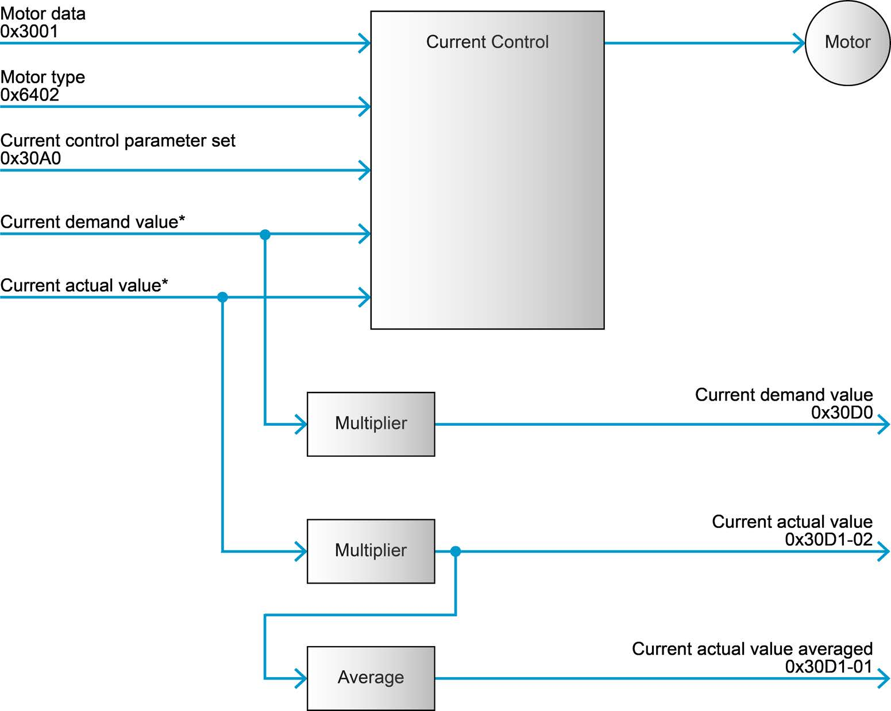
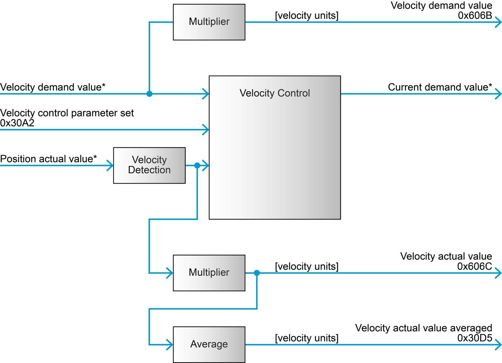
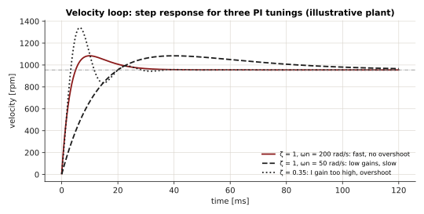
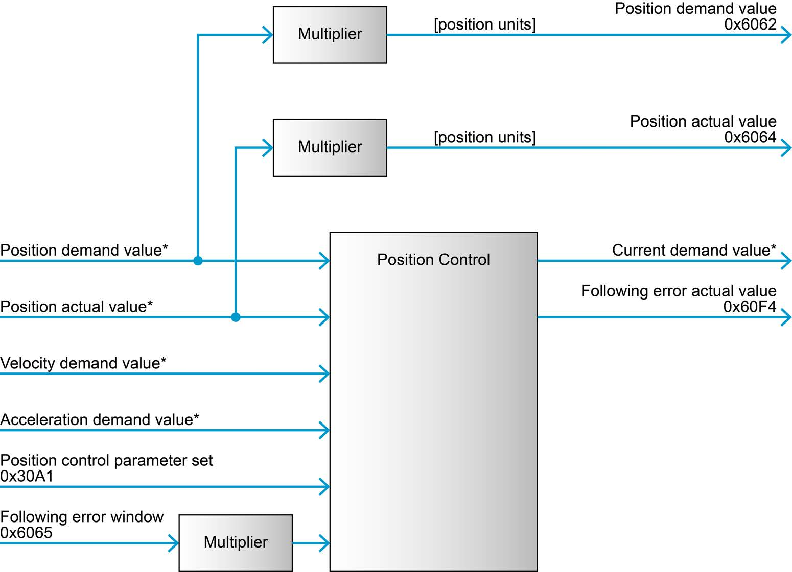

Control loops#
An EPOS4 controls a motor with up to three nested loops. The innermost controls current - and so torque - and every other loop produces a current demand for it.
flowchart LR
r["position or velocity<br/>demand"] --> PC["Position / velocity<br/>controller<br/>2.5 kHz"]
PC -->|"current demand<br/>i*"| CC["Current controller<br/>PI, 25 kHz"]
CC -->|"voltage"| PS["Power stage<br/>PWM"]
PS --> M(("Motor<br/>τ = Kt·i"))
M -->|"θ, ω (encoder)"| PC
M -->|"i (shunts)"| CCThe inner loop runs ten times faster than the outer ones. That separation is what lets each loop treat the one inside it as ideal: to the velocity controller, "command a current" is as good as "get that torque".
This page uses SI units, as the firmware does internally: angles in rad, velocities in
rad/s, currents in A. The gains on the bus are integers in micro-units: a current
P gain of 1171880 is 1.17188 V/A.
Current controller#

A digital PI controller (Firmware Specification, 6.2.61), sampled at 25 kHz:
where \(u\) is the voltage applied to the motor and \(i^{*}\) the current demand.
| Gain | Object | Unit on the bus | Default | In SI |
|---|---|---|---|---|
| \(K_{P,i}\) | 0x30A0:01 |
µV/A | 1 171 880 | 1.17 V/A |
| \(K_{I,i}\) | 0x30A0:02 |
µV/(A·ms) | 3 906 250 | 3906 V/(A·s) |
Why these units: the controller turns an error in amperes into a voltage. A P gain of 1.17 V/A means 1 A of error applies 1.17 V more to the winding.
Tuning. The current loop depends only on the motor's electrical data - resistance \(R\) and inductance \(L\) - so it is set once per motor type, normally by EPOS Studio's auto tuning, and rarely touched again. A PI current loop is usually designed to cancel the winding's electrical pole: choosing \(K_{I,i}/K_{P,i} = R/L\) leaves a first-order closed loop with bandwidth \(\omega_c = K_{P,i}/L\).
epos4::configs::CurrentControlConfigs current;
motor.GetConfigurator().Refresh(current);
std::printf("Kp = %.3f V/A, Ki = %.0f V/(A s)\n",
*current.p / 1e6, *current.i / 1e6 * 1000.0);
Torque from current#
For a DC or a field-oriented brushless motor, torque is proportional to current:
with the torque constant \(K_t\) in N·m/A (MotorConfigs::torqueConstant, in µN·m/A).
This is why controlling current is controlling torque, and why the drive expresses torque
in thousandths of a rated torque derived from current - see
Motor and thermal model.
Velocity controller#

A digital PI controller with velocity and acceleration feed-forward (6.2.63), sampled at 2.5 kHz:
\(\omega_d\) is the velocity demand and \(\hat\omega\) the velocity estimated by the velocity observer (below), filtered by a low-pass at the cut-off frequency.
| Gain | Object | Unit on the bus | Default | Meaning |
|---|---|---|---|---|
| \(K_{P,v}\) | 0x30A2:01 |
µA·s/rad | 20 000 | 0.02 A per rad/s of error |
| \(K_{I,v}\) | 0x30A2:02 |
µA/rad | 500 000 | 0.5 A per rad of accumulated error |
| \(K_{FF,v}\) | 0x30A2:03 |
µA·s/rad | - | current per rad/s of demanded velocity |
| \(K_{FF,a}\) | 0x30A2:04 |
µA·s²/rad | - | current per rad/s² of demanded acceleration |
| \(f_c\) | 0x30A2:05 |
Hz | - | velocity filter cut-off, 1-10 000 Hz |
The units read naturally: \(K_{I,v}\) in A/rad is "amperes per radian", because the integral of a velocity error is a position error.
The closed loop#
Model the mechanics as an inertia \(J\) with viscous friction \(b\) and a load torque \(\tau_L\):
With an ideal current loop and the PI law above, the closed loop from \(\omega_d\) to \(\omega\) has the characteristic equation
so it behaves like a second-order system with
- \(\omega_n\) sets the speed of response: the I gain sets bandwidth.
- \(\zeta\) sets the damping: the P gain damps it. Below \(\zeta \approx 0.7\) the response overshoots and rings.
- Both scale with \(K_t/J\): the same gains are twice as aggressive on half the inertia. A loop tuned on a bare motor oscillates less once a load is attached, and a loop tuned loaded is sluggish without it.
Example. The default gains on a motor with \(K_t = 0.105\) N·m/A and a total inertia of \(J = 10^{-5}\) kg·m²:
The loop is over-damped, and slow for a small motor. With ten times the inertia, \(\omega_n\) drops to 23 rad/s.

Feed-forward#
Feedback reacts to an error once it exists. Feed-forward supplies the current the motion is known to need, so the error never builds up. From the mechanics:
so the ideal feed-forward gains are \(K_{FF,v} = b/K_t\) (A·s/rad) and \(K_{FF,a} = J/K_t\) (A·s²/rad). With them, a trajectory that accelerates is followed with almost no lag - which matters most in CSP and PPM, where the demand is a smooth profile.
Velocity observer#
The velocity is not obtained by differentiating the position - at low speed that is mostly quantisation noise. The EPOS4 estimates it with a disturbance observer (6.2.64): a model of the axis
run alongside the real one and corrected by the encoder. The correction gains say how much to trust the measurement against the model:
| Parameter | Object | Unit | |
|---|---|---|---|
| Position correction gain | 0x30A3:01 |
‰ | |
| Velocity correction gain | 0x30A3:02 |
mHz | default 100 000 |
| Load correction gain | 0x30A3:03 |
µN·m/rad | how fast \(\hat\tau_L\) tracks a load |
| Friction \(\hat b\) | 0x30A3:04 |
0.001 µN·m/rpm | |
| Inertia \(\hat J\) | 0x30A3:05 |
0.001 g·cm² |
These are what EPOS Studio's auto tuning identifies. A mechanism very different from the
one it was tuned with - a heavy payload on an arm - shows up as a model that no longer
matches. Read and write them with VelocityObserverConfigs.
Velocity filter#
A first-order low-pass on the velocity, at cut-off \(f_c\):
Lower \(f_c\) means less noise into the current demand - quieter, cooler motor - but more phase lag in the loop, which limits how high the gains can go.
Position controller#

A digital PID controller with feed-forward (6.2.62), whose output is a current demand - it drives the current loop directly:
| Gain | Object | Unit on the bus | Default | Meaning |
|---|---|---|---|---|
| \(K_P\) | 0x30A1:01 |
µA/rad | 1 500 000 | 1.5 A per rad of error |
| \(K_I\) | 0x30A1:02 |
µA/(rad·s), or mA/(rad·s) | 780 000 | 0.78 A per rad·s |
| \(K_D\) | 0x30A1:03 |
µA·s/rad | 16 000 | 0.016 A per rad/s |
| \(K_{FF,v}\) | 0x30A1:04 |
µA·s/rad | - | |
| \(K_{FF,a}\) | 0x30A1:05 |
µA·s²/rad | - | |
| I-gain unit | 0x30A1:09 |
- | µA/(rad·s) | firmware ≥ 0x0170: PositionControlConfigs::iGainUnit |
Reading a gain. \(K_P = 1.5\) A/rad means: a position error of one radian of the motor shaft commands 1.5 A. With a 2048-quadcount encoder, one radian is \(2048 / 2\pi \approx 326\) quadcounts, so a 100-qc error commands \(1.5 \times 100/326 \approx 0.46\) A.
The D term acts on the derivative of the error - damping. In a position loop it plays the role the P term plays in a velocity loop.
Following error#
is monitored continuously: when \(|e_\theta|\) exceeds the following error window
(0x6065, LimitConfigs::followingErrorWindow, in quadcounts), the drive faults with
0x8611. The window is the safety net that turns a blocked or runaway axis into a fault
instead of a fight. Size it a few times larger than the error the axis shows on its fastest
legitimate motion - step_response records it.
Dual loop position control#
For a load with its own encoder behind a gearbox with play, the EPOS4 can close the
position loop on the load sensor and the velocity loop on the motor sensor
(6.2.65, DualLoopConfigs):
flowchart LR
d["position demand"] --> ML["Main loop<br/>P on load position<br/>gain scheduling"]
ML --> F["optional filter"]
F --> AL["Auxiliary loop<br/>PI velocity on motor sensor<br/>+ its own observer"]
AL --> CC["Current controller"]
CC --> M(("Motor")) --> G["Gearbox<br/>(backlash)"] --> L["Load sensor"]
L -. load position .-> ML
M -. motor velocity .-> AL- The main loop gain moves between a low-bandwidth and a high-bandwidth value by a scheduling weight, so the loop stays gentle across the backlash and stiff once engaged.
- The auxiliary loop has its own PI gains, feed-forward and observer.
- The filter coefficients only take effect when the update bit of
0x30AE:40is written;DualLoopConfigsdoes that, and requiresfilterActiveto be set with them.
It is selected through the control structure in AxisConfigs, and its gains are best found
with EPOS Studio.
Tuning in practice#
- Use EPOS Studio's auto tuning first. It identifies the motor and load and computes
every gain above, including the observer. Save the result on the drive. Then read it
back with EposLib to keep a copy in your repository:
epos4::configs::Epos4Configuration tuned; motor.GetConfigurator().Refresh(tuned); // tuned.currentControl, tuned.velocityControl, tuned.positionControl, tuned.velocityObserver - Tune with the real load. The loop gains scale with \(K_t/J\).
- Record the response, change one thing, record again. The step_response example writes target and actual to CSV for exactly this.
- By hand, inner to outer. Leave the current loop. For velocity: raise \(K_{P,v}\) until the response is quick without ringing, then \(K_{I,v}\) until steady-state error is gone without overshoot. For position: \(K_P\) for stiffness, \(K_D\) for damping, a little \(K_I\) for static error under load, then feed-forward for tracking.
- Apply and save:
epos4::configs::VelocityControlConfigs velocity; velocity.p = 30000; // µA·s/rad velocity.i = 800000; // µA/rad motor.GetConfigurator().Apply(velocity); // any power state motor.GetConfigurator().Save();
Signs of a loop pushed too far
Audible whine or buzz at standstill, a motor that runs hot without load, overcurrent
faults (0x2310) on fast moves, or oscillation that grows. Halve the last gain you
raised.